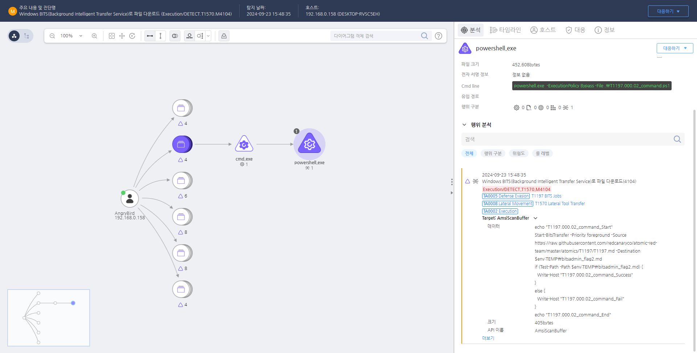

MITRE ATT&CK 액션을 기준으로 대응 방안을 작성
Bitsadmin 프로세스의 명령줄을 확인하여 악성 여부를 판단하여 탐지합니다.
 https://172.18.10.125:8903/#/analysis/alert/66f110ee002dc79400000016
해당 행위를 수행한 프로세스를 종료합니다.
BITS 서비스 남용 제한 (M1042 - Disable or Remove Feature or Program)
sc config BITS start= disabled BITS 작업 생성 및 실행 모니터링 (M1047 - System Logging & Monitoring)
비정상적인 네트워크 활동 탐지 (M1037 - Network Intrusion Prevention)
최소 권한 원칙 적용 (M1026 - Privileged Account Management)
SeImpersonatePrivilege 권한 제거를 통해 공격자가 SYSTEM 권한으로 BITS 작업을 실행하지 못하도록 차단 보안 정책 및 사용자 교육 (M1019 - Awareness and Training)
Action 실행시 함꼐 영향을 받는 다른 Techniqes
| ATT&CK |
|---|
| T1059.001 |
| T1105.000 |
| D3FEND |
|---|
| D3-NTA Network Traffic Analysis |
| D3-NTF Network Traffic Filtering |
| D3-ETW Event Tracing for Windows |
| D3-PM Platform Monitoring |